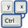
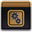
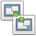
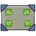
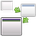
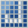
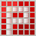
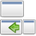
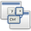

Compiz Plugins
Dieser Artikel wurde für die folgenden Ubuntu-Versionen getestet:
Ubuntu 16.04 Xenial Xerus
Die Basis von Compiz bilden eine ganze Anzahl von Plugins und Optionen, die in den verschiedenen Paketen von Compiz enthalten sind. In den nachfolgenden Tabellen erfolgt zu jedem Plugin der Hinweis, mit welchem Paket das Plugin installiert wurde. Dieses dient in erster Linie einer Fehlersuche bzw. Reparatur des eigenen Systems.
Man kann mit dem CompizConfig Einstellungs-Manager diese Plugins konfigurieren. Abgeleitet aus der Paketbezeichnung nachfolgend mit "CCSM" abgekürzt, bietet dieser umfangreiche Möglichkeiten, das Verhalten auf dem Bildschirm, das Aussehen diverser Komponenten sowie die Eingriffe durch die Tastatur und die Maus einzustellen.
Beschreibung¶
Die folgenden Tabellen sind so aufbereitet, wie diese nach dem Aufrufen vom CCSM in diesem dargestellt werden. Ausgehend von der in der linken Spalte angeordneten Options-Gruppen wurde die Unterteilung entsprechend angepasst. Innerhalb einer Options-Gruppe wurden die Plugins alphabetisch geordnet, um das Auffinden zu erleichtern. Die Links im Informations-Abschnitt verweisen auf detaillierte Beschreibungen bzw. Einstellhinweise der jeweiligen Option.
Die Symbole beziehen sich auf den Stand einer frischen Installation und haben in den Erläuterungen folgende Bedeutung:
= Diese Option ist nicht gesetzt
= Diese Option ist aktiviert
Fehlt in der Matrix eine Markierung, ist diese Option unter der angegebenen Ubuntu-Version nicht vorhanden. Ab Natty Narwhal erfolgte eine Umstellung innerhalb der Optionen.
| Compiz Plugins, Paketinformationen | |||||
| Paket-Referenz | Paket | Paket-Version | |||
| Precise | |||||
| basis | compiz-core | 1:0.9.7  | |||
| compiz-plugins | 1:0.9.7 | ||||
| main | compiz-fusion-plugins-main | 1:0.9.7 | in Xenial compiz-plugins-default 1:0.12 | ||
| extra | compiz-fusion-plugins-extra | 1:0.9.7 | obsolet in Xenial | ||
Hinweis:
Eine Beschreibung der "Plugins Unsupported" ist nicht in dieser Aufstellung enthalten.
Die Hinweise auf gesetzte Plugins basieren auf "Ubuntu", bei "KDE" ist das entsprechend sinngemäß anzusetzen.
Allgemein¶
| Compiz Plugins, Allgemein | |||||||
| Plugin-Bezeichnung | Paket-Referenz | Ubuntu-Version | Details / Beschreibung | ||||
| Precise | |||||||
| Allgemeine Optionen | basis | nicht abwählbar | Allgemeine Optionen | ||||
|  | Commands | basis | Commands | ||||
| Composite | basis | Composite | |||||
| Copy to Texture | basis | Copy to Texture | |||||
| Gnome Kompabilität | basis | Gnome Kompabilität | |||||
| KDE Kompabilität | main | KDE Kompabilität | |||||
| KDE | basis | KDE/Qt Event Loop | |||||
| Open GL | basis | OpenGL | |||||
Barrierefreiheit¶
| Compiz Plugins, Barrierefreiheit | |||||||
| Plugin-Bezeichnung | Referenz | Ubuntu-Version | Details / Beschreibung | ||||
| Precise | |||||||
| Desktop zoomen | basis | Desktop zoomen | |||||
| Enhanced Zoom Desktop | main | Erweiterter Desktop Zoom | |||||
| Farbfilter | main | Farbfilter | |||||
 | Helligkeit & Kontrast | basis | Helligkeit und Kontrast | ||||
| Inaktive Fenster | extra | Fenster abdimmen | |||||
|  | Negative Darstellung | main | Fensterinhalte umkehren | ||||
| Sichtbarkeit | main | Sichtbarkeit | |||||
 | Vergrößerung | main | Vergrößerung - Lupenfunktion | ||||
| Zeige Maus | extra | Zeige die Maus | |||||
Arbeitsfläche¶
| Compiz Plugins, Arbeitsfläche | |||||||
| Plugin-Bezeichnung | Referenz | Ubuntu-Version | Details / Beschreibung | ||||
| Precise | |||||||
|  | Ausgabe klonen | basis | Ausgabe klonen | ||||
| Arbeitsflächen-Umschalter | main | Desktop umschalten | |||||
| Desktoptafel | main | Desktoptafel | |||||
|  | Desktop einblenden | extra | Desktop einblenden | ||||
| Desktop-Würfel | basis | Desktop-Würfel | |||||
| Expo Funktionen | main | Expo Funktionen | |||||
| Ubuntu Unity Plugin | main | Ubuntu Unity Plugin | |||||
| Widget Ebene | extra | Widget Ebene | |||||
| Würfel drehen | basis | Würfel drehen | |||||
| Zeige Desktop | extra | Zeige Desktop | |||||
Effekte¶
| Compiz Plugins, Effekte | |||||||
| Plugin-Bezeichnung | Referenz | Ubuntu-Version | Details / Beschreibung | ||||
| Precise | |||||||
| 3D-Fenster | extra | 3D-Fenster | |||||
| Animation | main | Animation | |||||
| Animation AddOn | extra | Animation-AddOn | |||||
| Bewegungsunschärfe | extra | Bewegungsunschärfe | |||||
| Bicubic filter | extra | Bicubic Filter | |||||
| Cube Gears | extra | Cube Gears | |||||
| Cube Reflection and Deformation | extra | Cube Reflection and Deformation | |||||
| Fenster ein-/ausblenden | basis | Fenster ein-/ausblenden | |||||
| Fensterdekoration | basis | Fensterdekoration | |||||
| Fensterunschärfe | basis | Fensterunschärfe | |||||
|  | Fokusverlauf | extra | Fokusverlauf | ||||
| Login/Logout | extra | Login/Logout | |||||
| Minimierungseffekt | basis | Minimierungseffekt | |||||
| Reflektionen | extra | Reflektionen | |||||
| Wackelige Fenster | basis | Wackelige Fenster | |||||
| Wassereffekt | basis | Wassereffekt | |||||
| Zeichne Feuer auf den Bildschirm | extra | Zeichne Feuer auf den Bildschirm | |||||
Sonstiges¶
| Compiz Plugins, Sonstiges | |||||||
| Plugin-Bezeichnung | Referenz | Ubuntu-Version | Details / Beschreibung | ||||
| Precise | |||||||
| Auf dem Bildschirm zeichnen | basis | Auf dem Bildschirm zeichnen | |||||
| Bildschirmfoto | basis | Bildschirmfoto | |||||
| Fenster-Vorschaubilder | main | Fenster-Vorschaubilder | |||||
| Ladebildschirm | extra | Ladebildschirm | |||||
| Leistungstest | extra | Leistungstest | |||||
Bildverarbeitung¶
| Compiz Plugins, Bildverarbeitung | |||||||
| Plugin-Bezeichnung | Referenz | Ubuntu-Version | Details / Beschreibung | ||||
| Precise | |||||||
|  | JPEG | main | Information JPEG | ||||
|  | PNG | basis | Information PNG | ||||
| SVG | basis | Information SVG | |||||
| Text | main | Information Text | |||||
Werkzeuge¶
| Compiz Plugins, Werkzeuge | |||||||
| Plugin-Bezeichnung | Referenz | Ubuntu-Version | Details / Beschreibung | ||||
| Precise | |||||||
| Abhilfen | main | Abhilfen (Workarounds) | |||||
| Änderungen überwachen | basis | Änderungen überwachen (Inotify, File Watcher) | |||||
| Absturzverwalter | extra | Absturzverwalter (Crash Handler) | |||||
| Benachrichtigung | extra | Benachrichtigung (Notification) | |||||
| Benutzerbereichs-Dateisystem | extra | Benutzerbereichs-Dateisystem | |||||
| Compiz Library Toolbox | basis | Compiz Library Toolbox | |||||
| D-Bus | basis | D-Bus | |||||
| Fenster-Skalier-Informationen | main | Fenster-Skalier-Informationen | |||||
| GLib | basis | GLib | |||||
 | Hardware erkennen | extra | Hardware erkennen (Detection) | ||||
| Hintergrundbild | extra | Hintergrundbild (Wallpaper) | |||||
| Mouse position polling | basis | Mouse position polling | |||||
| Reguläre Ausdrücke | basis | Reguläre Ausdrücke | |||||
| Skalierungs-Erweiterungen | main | Skalierungs-Erweiterungen | |||||
| Skalierungs-Fenstertitelfilter | extra | Skalierungs-Fenstertitelfilter | |||||
| Session Management | main | Session Management Diese Option betrifft nur das KDE-Desktop. | |||||
 | Sicherheiten | extra | Sicherheiten (Bailer) | ||||
| Titelleisten Information | main | Titelleisten Informationen (Title Bar Info) | |||||
| Video Wiedergabe | extra | Video Wiedergabe | |||||
Fensterverwaltung¶
| Compiz Plugins, Fensterverwaltung | |||||||
| Plugin-Bezeichnung | Referenz | Ubuntu-Version | Details / Beschreibung | ||||
| Precise | |||||||
| Anwendungs-Umschalter | basis | Anwendungs-Umschalter | |||||
| Fenster plazieren | basis | Fenster plazieren | |||||
| Fenster skalieren | basis | Fenster skalieren | |||||
 | Fenster verschieben | basis | Fenster verschieben | ||||
| Fenster positionieren | main | Fenster positionieren | |||||
| Grid | basis | Grid | |||||
| Gruppiere und Tabbe Fenster | extra | Gruppiere und Tabbe Fenster | |||||
|  | Maximumize | extra | Maximumize | ||||
| Regeln für Fenster | main | Regeln für Fenster | |||||
| Ring-Anwendungs-Umschalter | main | Ring-Anwendungs-Umschalter | |||||
| Shelf | extra | Shelf | |||||
| Shift Switcher | main | Shift Switcher | |||||
| Skalieren | basis | Skalieren | |||||
| Snapping Windows | main | Snapping Windows | |||||
| Static Application Switcher | main | Static Application Switcher | |||||
|  | Zusätzliche Fenstermanager Aktionen | extra | Zusätzliche Fenstermanager Aktionen | ||||
Ohne Kategorie¶
| Compiz Plugins, Ohne Kategorie | |||||||
| Plugin-Bezeichnung | Referenz | Ubuntu-Version | Details / Beschreibung | ||||
| Precise | |||||||
| Debug Spewer | basis | Debug Spewer | |||||
| Unity MT Grab Handles | main | Unity MT Grab Handles | |||||
Links¶
Intern¶
Compiz - ein Composite- und Fenstermanager
CCSM - der CompizConfig Einstellungs-Manager
CCSM Benutzung - wie die Plugins mit dem CCSM bearbeitet werden

- Erstellt mit Inyoka
-
 2004 – 2017 ubuntuusers.de • Einige Rechte vorbehalten
2004 – 2017 ubuntuusers.de • Einige Rechte vorbehalten
Lizenz • Kontakt • Datenschutz • Impressum • Serverstatus -
Serverhousing gespendet von